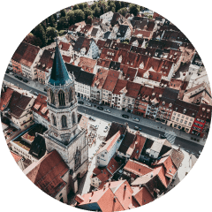
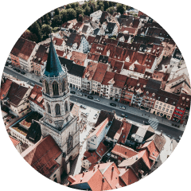

Преместете плъзгача, за да видите визуално резултата:
Преди O caps
След 2 седмици
След 3 седмици
След 1 месец


 


Капсули за подобряване на зрението с бета-каротин

Укрепват очнодвигателните мускули
Компонентите на O caps повишават тонуса на цилиарния мускул, който поддържа лещата на мястото й и я предпазва от пренапрежение
Подобряват кръвоснабдяването на очите
Капсулите повишават еластичността на очните артерии и стимулират притока на кръв към ретината и роговицата
Подобряват зрителната острота и яснота
След един курс O caps ще различавате по-добре цветовете, ще виждате по-ясно контурите на предметите, с лекота ще четете дребния шрифт и очите ви никога няма да се уморят от продължителна работа пред компютъра
Бета-каротин - Бета-каротин: мощен антиоксидант, който участва в механизмите на възприятие от очите и синтеза на зрителния пигмент родопсин. Предпазва роговицата. Намалява интензивността и степента на дегенеративните процеси в очната ябълка, свързани с възрастовите изменения, но също и глаукома, катаракта, вътрешно кървене и т.н.
изостря зрението;
укрепва мускулите и кръвоносните съдове на очите;
предотвратява дегенеративните изменения в ретината;
намалява риска от загуба на зрение.
Витамин E, витамин C - увеличава защитната функция на ретината. Те намаляват чувствителността на очите към екранното трептене:
намалява умората на очите след работа с компютър;
предпазва ретината от UV-лъчението;
повишава зрителната острота през нощта;
предотвратява развитието на катаракта.
Цинк - укрепва очните капиляри, премахва раздразнението и възпалението. Овлажнява. Елиминира неприятни симптоми: сухота, парене, възпаление, високо очно налягане:
изостря зрението и повишава яснотата;
възстановява способността да виждаме цветове, контури и малки предмети;
подобрява притока на кръв;
подхранва с хранителни вещества клетъчните структури;
1 капсула O caps = 1кг пресни моркови.
„Загубата на зрението е проблем за тези, които четат много или работят на компютър. Очилата и лещите влошават ситуацията още повече, защото очите с тях се отпускат и свикват да виждат само с тяхна помощ. Лазерната корекция на зрението също не е вариант. Ако причината за проблеми със зрението (компютри, теизор, смартфони) не бъде елиминирана, ефектът от корекцията ще продължава само 1-2 години. Можете да подобрите зрението си с O caps с натурален бета-каротин. Тайната на тези капсули е в оптималната дозировка на компонентите. Те съдържат точно толкова, колкото е необходимо за нашето зрение, за да стане по-ясно и по-остро, въпреки големите натоварвания“.
- Васил Иванов, експерт по възстановяване на зрението
Цял живот работя в офис. След 40-годишна възраст зрението ми започна бързо да се влошава. Започнах да нося очила. Толкова са неудобни. А с контактните лещи е още по-зле, очите постоянно ме болят и сърбят. Но това не беше най-лошото нещо. По-лошото беше, че колкото повече носех очила и лещи, толкова по-лошо виждах без тях. За да не ослепея напълно, по съвет на приятели започнах да пия капсулите O caps. Зрението ми започна да се възстановява постепенно. След няколко седмици виждах предметите не толкова размазано както преди и след месец можех да прочета рекламните табели на съседната сграда. Все още нося очила, но с по-тънки стъкла. Сигурен съм, че след 2-3 курса O caps, ще мога да ги сваля!
- Красимир
Преподавам в университета повече от 40 години. Много обичам работата си и нямам желание да се пенсионирам. Но от постоянното натоварване заради учебниците и лаптопа, зрението ми започна да се влошава все повече и повече с всяка изминала година. Започнах да виждам по-лошо, не успявах да прочета дребният шрифт дори с очила. Страхувах се, че с такова темпо скоро ще трябва да се сбогувам с науката. Когато споделих проблемите си с една колежка, тя ми препоръча капсулите O caps. Само седмица по-късно започнах по-лесно да чета текстове от екрана на компютъра. Постепенно, след един месец, зрението ми се възстанови. Сега нося очила с минимални диоптри. И това е на 67 години!
- Цветелина
Разбрах за O caps от един лекар, когато отидох на лазерна корекция на зрението. Толкова се беше влошило, че дори очилата вече не ми помагаха. В клиниката ме разубедиха да се подлагам на операция. Казаха, че на моите 52 години анестезията е опасна за сърцето. Препоръчаха ми да започна да пия O caps. Казаха, че ако тези капсули не ми помогнат, ще ми предпишат по-силни лекарства. Но нямах нужда от тях. Капсулите си свършиха работата. Сега нося очила само когато чета или гледам теизия. В обикновения живот се справям добре без тях.
- Радост